טלפון כשר.
במרחק לחיצה.
טלפון כשר בלחיצה אחת · סינון לכל הטלפון
לוחצים על כשר והטלפון הופך לטלפון כשר: רק האפליקציות שבחרתם, בלי אינטרנט פתוח, ומסך בית רגוע משלו. כדי לצאת צריך קוד, ומי שאתם סומכים עליו מחזיק אותו.


האנדרואיד שלכם,
as it is.
כל אפליקציה, כל האינטרנט, כל ההגדרות. גללו כדי להחליף.
אנדרואיד
כשר.
מסך בית כשר משלו, ואינטרנט רק לאפליקציות שאישרתם.
Chrome · Play Store · הגדרות · הכול
טלפון · WhatsApp · סידור · לוח
Kosher Switch לאנדרואיד
גרסה 1.5 · אנדרואיד 10 ומעלה · סמסונג, פיקסל, שיאומי, טלפונים עם מקשים וטאבלטים.
חדש בגרסה 1.5: מסלולים. המסלול האישי מתחיל בשבועיים חינם; מזינים את המפתח מהמייל בהגדרות ← המסלול שלכם. יציאה ממצב כשר תמיד בחינם.
בגרסה 1.4: סידור מלא בשלושת הנוסחים (פסוקי דזמרה, לכה דודי, מוסף לשבת, קריאות התורה ועוד), וקריאה נוחה יותר: הוראות באותיות קטנות בזהב וכותרת ברורה לכל חלק.
- מורידים בטלפון ופותחים את הקובץ. אם נשאלים, מאשרים התקנה מהדפדפן.
- פותחים את Kosher Switch: המדריך שלו מוביל אתכם בהתקנה החד־פעמית.
- או מגדירים טלפון מאופס עם קוד ה-QR שלמטה, בלי להתקין שום דבר ידנית.
בטוח, גם היכן
שהאינטרנט מותר.
כל אפליקציה שמותר לה להתחבר עוברת דרך סינון כשר, והעוזר נשאר נקי לא משנה מה שואלים אותו.
העצה שלנו: בלי דפדפן בכלל. טלפון כשר הכי בטוח בלי דפדפן, גם לא מסונן או ”כשר“, ולכן ב-Kosher Switch אין דפדפן כברירת מחדל, ודפדפנים מסומנים ”לא מומלץ“. אם בכל זאת מאשרים, כל מה שלמטה שומר עליו בטוח ככל האפשר. הבחירה שלכם.
סינון לכל אפליקציה מותרת
- אתרים למבוגרים חסומים
- אתרים לא צנועים ותוכן מעורב חסומים
- SafeSearch תמיד פעיל: Google, Bing, YouTube
- פרוקסי ו-VPN שעוקפים סינון חסומים
- Chrome: בלי גלישה בסתר, YouTube במצב המחמיר ביותר
- בלי תמונות באתרים, אלא אם הורה מאשר
- אפליקציית Google ודפדפנים אחרים נשארים בלי אינטרנט כשהתמונות כבויות
עוזר עם הגנות
- שאלות נבדקות לפני שהבינה המלאכותית רואה אותן
- תשובות נבדקות תוך כדי כתיבה
- עברית ואנגלית, גם עם תרגילי כתיב
- מסרב גם דרך סיפורים, משחקי תפקידים או ”לצורך לימוד“
- מתכונים עדיין עוברים בדיקת כשרות
הדפדפן הכשר כבוי כברירת מחדל
- רק אם באמת צריך דפדפן: הוא כבוי עד שמדליקים אותו
- כל תמונה נבדקת בטלפון לפני שהיא מופיעה
- כל תמונה שיש בה אדם נשארת מכוסה בחותם של Kosher Switch
- נוף, אוכל, מפות ותרשימים מוצגים כרגיל
- SafeSearch תמיד פעיל, וסרטונים לא מתנגנים
- שום דבר לא נשלח לבדיקה
כל מה שטלפון
כשר צריך.
מצב כשר הוא לא סינון שאפשר לדלג עליו. הטלפון עצמו משתנה, ונשאר כך עד שמקלידים את הקוד.
רק האפליקציות שלכם
כל השאר נעלם: דפדפנים, חנויות, רשתות חברתיות. ההגדרות נעולות, ההתקנה חסומה, והמצב הבטוח כבוי.
אינטרנט רק היכן שמותר
כל אפליקציה מנותקת מ-Wi-Fi ומחבילת הגלישה, חוץ מאלה שבחרתם, כמו Waze. גם התראות מאפליקציות חסומות מוסתרות.
מסך בית משלו
שעון גדול, התאריך העברי, ווידג׳ט זכוכית עם הפרשה וזמני היום, שורת אפליקציות, ומגירה שמסדרים לבד.
חוזרים עם קוד אחד
כדי לצאת צריך את הקוד הסודי. הפעלה מחדש לא מכבה את המצב, וחמישה קודים שגויים נועלים את המקלדת לדקה.
סידור ותהילים
אשכנז, ספרד ועדות המזרח. כל תפילה כטקסט אחד, תפריט חלקים, חיפוש ותהילים יומי. בלי אינטרנט.
לוח וזמני היום
לוח עברי, פרשה, חגים, הדלקת נרות וזמני היום, לפי המיקום שלכם.
פתקים שעושים יותר
הדגשה, כותרות, רשימות, רשימות סימון וציורים בשבעה צבעים. הצמדה וחיפוש בפתקים.
עוזר בלי אינטרנט
”תעיר אותי ב-7“, ”תתקשר לאמא“, ”תכתוב פתק עם מתכון“. הוא רץ על הטלפון עצמו; שום דבר לא נשלח לשום מקום.
מזג אוויר חי
עכשיו, לפי שעות ול-10 ימים, על רקע שמיים חיים: שמש, גשם, שלג וברקים. הורה יכול לכבות.
טלפונים עם מקשים
בטלפונים כמו Qin F21 Pro מקשי המספרים מקלידים את הקוד, חזרה מוחקת, OK פותח, והחצים מזיזים טבעת זהב בכל מסך.
עשוי להרגיש טוב
עיצוב זכוכית, רטט עדין, מצב כהה ובהיר, חמישה רקעים ושלושה סגנונות סמלים.
חלק בכל מקום
הרבה טלפונים קטנים מכבים אנימציות. Kosher Switch שומר על המסכים שלו חלקים בכל זאת, בלי לגעת בהגדרות הטלפון.
ראו אותו בטלפון אמיתי.
כל המסכים הם מ-Samsung Galaxy A32 5G שמריץ את Kosher Switch.
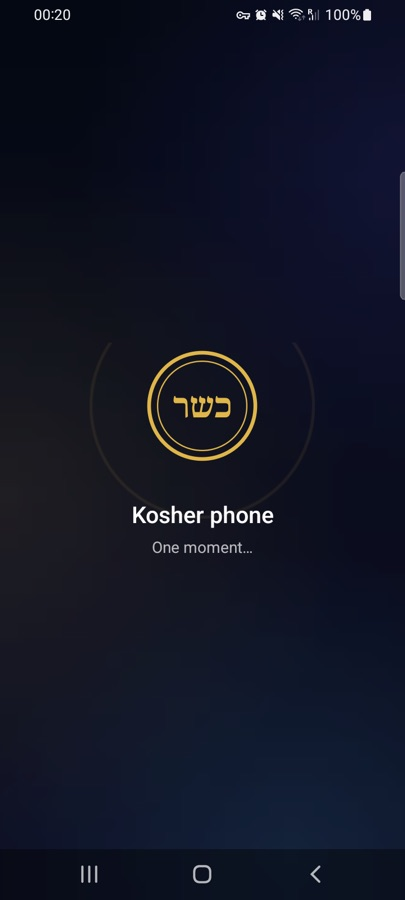
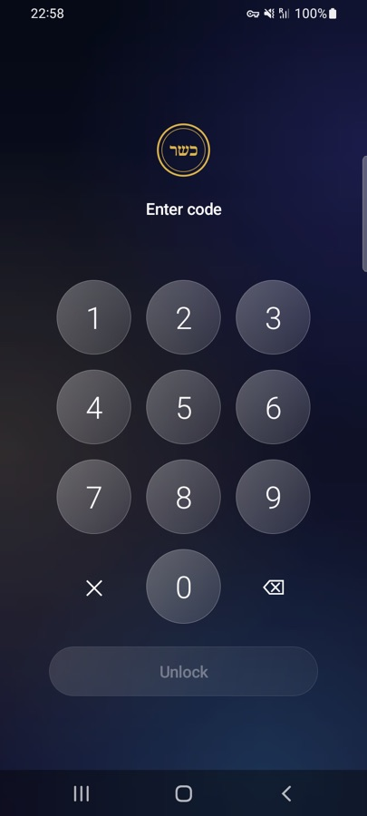
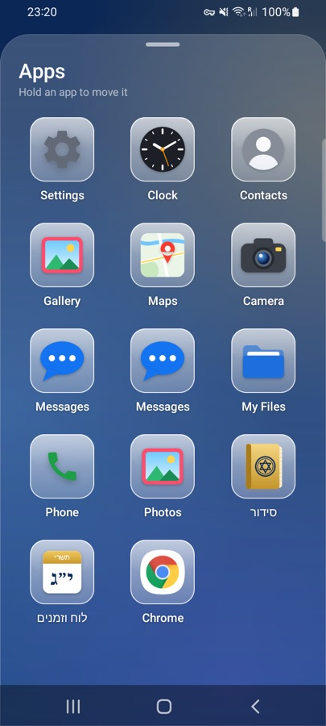
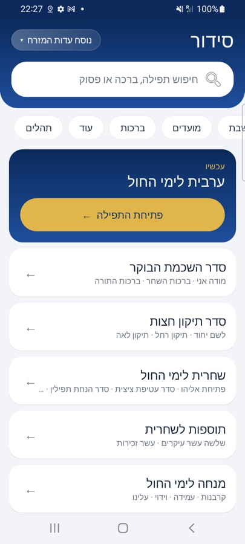
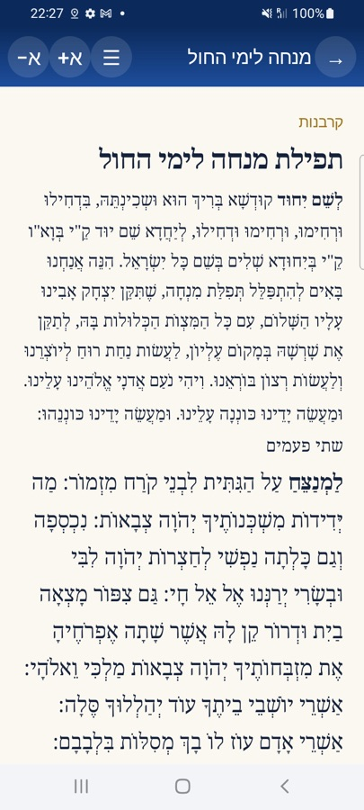
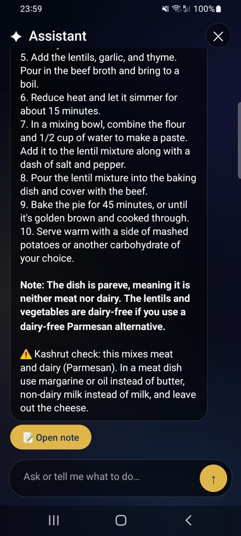
לחיצה אחת פנימה.
לוחצים על כשר בלוח הנפתח. הסמל מסתובב פנימה, הטלפון משתנה, ומסך הבית הכשר נבנה חלק אחר חלק.
קוד אחד החוצה.
מקלדת זכוכית עם רטט. בלי הקוד הוא נשאר כשר, גם אחרי הפעלה מחדש.
רגוע, ברור, ושלכם.
מחליקים למעלה לאפליקציות על זכוכית חלבית. לוחצים לחיצה ארוכה כדי להזיז. בוחרים סמלים כשרים, זכוכית או מקוריים.
כל הסידור, בכיס.
התפילה המתאימה לשעה מחכה למעלה. אשכנז, ספרד ועדות המזרח, עם חיפוש שמתעלם מניקוד.
כל תפילה, טקסט אחד.
כל תפילה נפתחת כטקסט רציף, עם תפריט לקפוץ לכל חלק. גם תהילים יומי ושבועי.
עזרה שלא עולה לאינטרנט.
בינה מלאכותית קטנה רצה על הטלפון עצמו. היא מתקשרת, מכוונת שעונים מעוררים וכותבת פתקים. תשובות על אוכל עוברות בדיקת כשרות אוטומטית.
סמסונג, פיקסל, שיאומי,
ועוד.
אפליקציית אנדרואיד רגילה שמתאימה את עצמה למסכים גדולים וקטנים, כולל טלפונים עם מקשים כמו Qin F21 Pro.
- 📞 טלפון
- 💬 הודעות
- 📖 סידור
- 🗓 לוח וזמנים
תמונות הפיקסל והטלפון עם המקשים הן איור. עד עכשיו נבדק במלואו על Samsung Galaxy A32 5G; עוד טלפונים בבדיקה. דורש אנדרואיד 10 ומעלה עם מעבד 64 ביט.
מבט מקרוב.
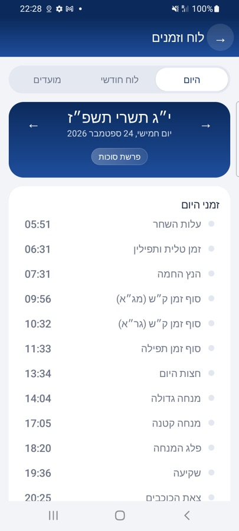
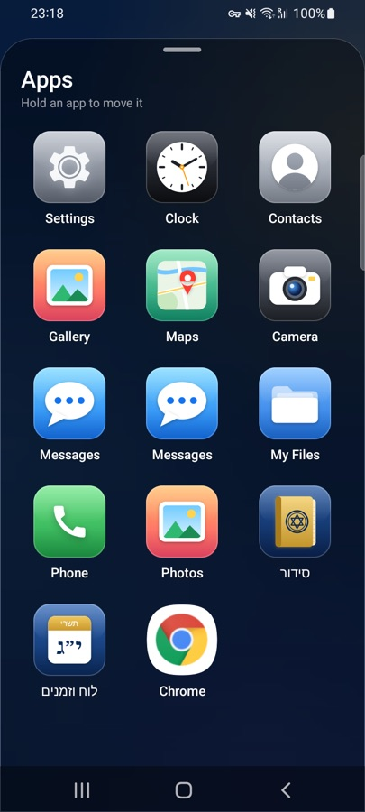
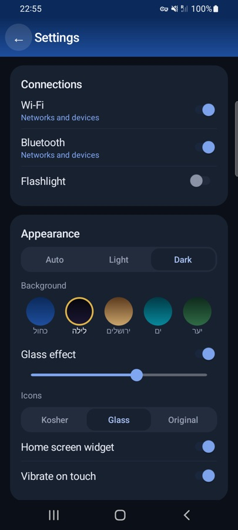
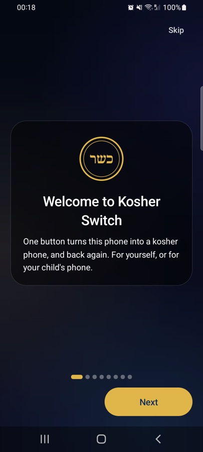
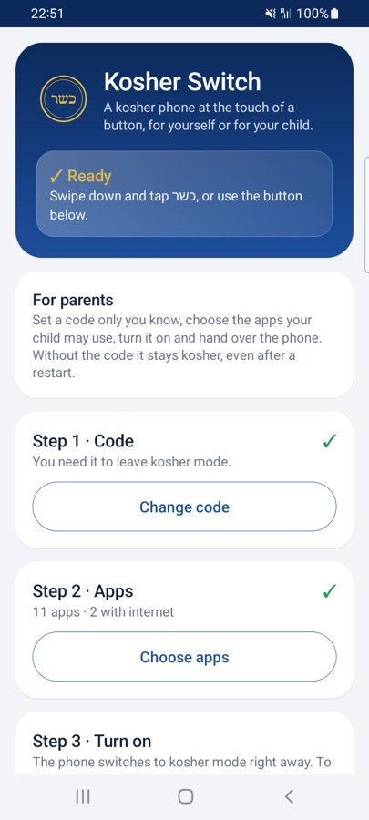
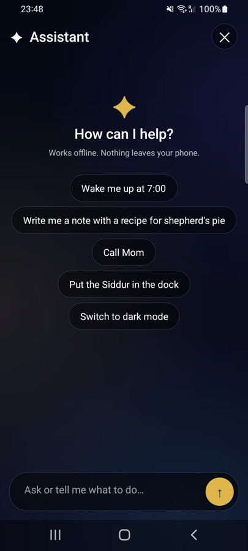
מגדירים.
ומוסרים.
בוחרים קוד שרק אתם יודעים, בוחרים את האפליקציות שהילד יכול להשתמש בהן ואילו מהן יתחברו לאינטרנט, ומפעילים. בלי הקוד הוא נשאר כשר, גם אחרי הפעלה מחדש.
- בלי דפדפן ובלי עוזר כברירת מחדל: אתם מחליטים מה להוסיף
- ההגדרות של הטלפון נשארות נעולות
- בלי חשבונות, חנויות אפליקציות או דפדפנים אלא אם אישרתם
- מגדירים לעצמכם? תנו למי שאתם סומכים עליו לבחור את הקוד
שלושה שלבים.
מגדירים פעם אחת; אחר כך זו לחיצה אחת.
מגדירים פעם אחת
עם קוד QR בטלפון מאופס, או פקודה אחת ממחשב. אנדרואיד דורש את זה מכל אפליקציה שנועלת טלפון.
בוחרים קוד ואפליקציות
המדריך שבאפליקציה מוביל אתכם. הכול כלול: סידור, לוח, פתקים ועוזר.
לוחצים על כשר
מחליקים מלמעלה ולוחצים על כפתור כשר. כדי לצאת, לוחצים שוב ומקלידים את הקוד.
שתי דרכים להתקין.
Kosher Switch צריך להיות ”הבעלים של המכשיר“. אנדרואיד מאפשר זאת רק באחת מהדרכים האלה.
א. עם קוד ה-QR הזה
- מגבים את הטלפון ומאפסים להגדרות יצרן (או מתחילים עם טלפון חדש).
- במסך ברוכים הבאים הראשון, מקישים על המסך 6 פעמים.
- מתחברים ל-Wi-Fi אם מתבקשים, וסורקים את הקוד:
הטלפון מוריד ומגדיר את Kosher Switch לבד. צריך טלפון עם מסך ההגדרה של Google.
ב. עם מחשב
- מתקינים את האפליקציה עם כפתור הורדה.
- הגדרות ← אודות הטלפון ← פרטי תוכנה ← מקישים על מספר Build 7 פעמים.
- אפשרויות מפתחים ← מפעילים ניפוי באגים ב-USB.
- הגדרות ← חשבונות ← מסירים את כל החשבונות לרגע.
- מתחברים למחשב עם Android platform tools ומריצים:
adb shell dpm set-device-owner dev.kosherswitch/.KosherAdmin - מחזירים את החשבונות.

מוכנים כשאתם מוכנים.
מגדירים פעם אחת, נותנים למי שאתם סומכים עליו לבחור קוד, והטלפון כשר בלחיצה אחת.